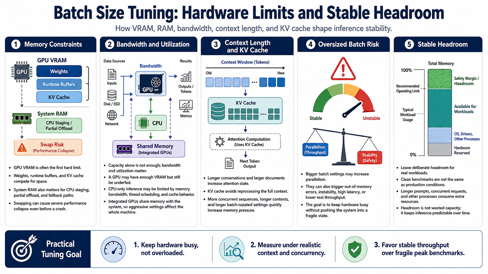

Hardware Constraints and Memory Pressure
Connecting to LMS... Progress: in progress

Narration
Batch size tuning is bounded by hardware. GPU VRAM is usually the first constraint people notice because model weights, runtime buffers, and the KV cache all compete for space. System RAM matters too, especially when the model is partially offloaded, when the runtime uses CPU memory for staging, or when the machine falls back to swapping. Once swapping begins, performance can collapse even if the process does not crash immediately.
Memory bandwidth and compute utilization are just as important as raw capacity. A GPU with enough VRAM may still be underused if the runtime cannot feed it efficiently. A CPU-only setup may be limited by memory bandwidth, thread scheduling, and cache behavior. Integrated GPUs share memory with the system, so aggressive settings can affect both inference and the rest of the machine.
Context length has a direct impact because longer conversations and larger documents require more attention state. The KV cache stores intermediate state that lets generation continue without reprocessing the entire context every time. That cache is useful, but it is not free. More concurrent sequences, longer contexts, and larger batch-related settings can increase memory pressure quickly.
Oversized batch settings can look attractive because they promise more parallelism, but they can also cause out-of-memory errors, runtime instability, high latency, or slower throughput. The practical goal is to find a setting that keeps the hardware busy without pushing it into a fragile state. Stable headroom matters, especially for systems that need to run for hours instead of surviving one benchmark.
This is why a stable configuration usually leaves deliberate headroom. A machine that reports just enough free VRAM during a clean test may fail when the prompt is longer, another process opens, or concurrent requests arrive. Headroom is not wasted capacity. It is the margin that keeps inference predictable when real operating conditions are less tidy than a benchmark.